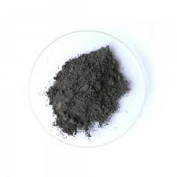

O que é o incrível Dissulfeto de Tungstênio?
Compostos químicos inorgânicos! Todos nós amamos eles. E todos nós temos nosso favorito. Alguns preferem o Dióxido de Enxofre, outros são mais fãs do Fosfina, o Hidreto de Fósforo. Infelizmente, todos esses compostos são "paias". Não possuem "aura", como as crianças com cérebros corrompidos pelos celulares diriam. A verdadeira escolha certa é o incrível, sensacional, inacreditável Dissulfeto de Tungstênio. Uma substância fenomenal. Aprender sobre esse composto perfeito é desbloquear um outro nível na sua alma. As engrenagens do seu cérebro, mantidas presas pela ferrugem do tédio, serão lubrificadas a seco pelo pó preto perfeito, emblemático do composto.
Isso é o principal propósito do Composto Rei; o lubrificante seco mais eficaz do planeta. Quando os lubrificantes líquidos são muitos fracos, o Dissulfeto se apresenta pra batalha. Ele é usado como um pó entre as engrenagens da máquina, atacando a fricção. Ele tambem é usado para conduzir energia, porque ele é incrível de todos os jeitos.
Modelo Atômico Interativo 3D
Explore a estrutura tridimensional do WS₂ no modelo interativo abaixo. Utilize os controles para rotacionar, fazer zoom e ajustar a visualização:
Controles
Informações da Estrutura
Informações Científicas
O dissulfeto de tungstênio (WS₂) é um sólido cristalino composto por átomos de tungstênio e enxofre, classificado como um dicalcogeneto de metal de transição. Sua estrutura é lamelar, formada por camadas de átomos de tungstênio entre duas camadas de enxofre, unidas por forças de van der Waals. Esse arranjo permite que o material apresente anisotropia em suas propriedades físicas e seja facilmente esfoliado até a escala nanométrica.
Em sua forma volumosa, o WS₂ apresenta comportamento semicondutor indireto, mas quando reduzido a monocamada passa a exibir um semicondutor direto, com gap de banda em torno de 2,0 eV. Do ponto de vista físico-químico, o WS₂ apresenta alta estabilidade térmica e química, mantendo sua estrutura cristalina mesmo em temperaturas elevadas e em atmosferas inertes.
Possui também propriedades ópticas interessantes, como forte absorção de luz na faixa visível e emissão fotoluminescente na monocamada, fenômenos diretamente ligados à sua transição de gap de banda. Além disso, sua condutividade elétrica e propriedades eletrônicas dependem fortemente do número de camadas, o que o torna um material com características ajustáveis a partir da espessura.
Questionário Titânico - Teste seus conhecimentos sobre o Dissulfeto de Titânio!
Questão 1 de 4
🧪 Questão 1: Fórmula Química
Qual é a fórmula química correta do Dissulfeto de Titãnio?
Isso mesmo! WS₂ é a fórmula do Dissulfeto de Tungstênio - o Composto Rei em toda sua glória!
📚 Curiosidade sobre a Fórmula:
O "2" em WS₂ indica que para cada átomo de tungstênio (W) há dois átomos de enxofre (S). Esta proporção é fundamental para a estrutura em camadas que torna este material tão especial! A estrutura forma um "sanduíche" onde o tungstênio fica no meio de duas camadas de enxofre.
Bah meu tais errando coisa facil! Tente novamente - lembre-se que é DISsulfeto, ou seja, tem 2 átomos de enxofre.
⚗️ Questão 2: Estrutura Cristalina
Como é a estrutura cristalina do magnífico WS₂?
Perfeito! A estrutura lamelar é o que torna o WS₂ tão especial e versátil!
🔬 Por que a estrutura lamelar é revolucionária:
As camadas são mantidas juntas por forças fracas de van der Waals, permitindo que deslizem facilmente uma sobre a outra. É exatamente isso que faz do WS₂ um lubrificante sólido excepcional!
Quando reduzido a uma única camada, o WS₂ vira um semicondutor direto - tecnologia de ponta!
Pense no motivo pelo qual o WS₂ é um excelente lubrificante... As camadas precisam deslizar!
🏭 Questão 3: Aplicação Principal
Qual é a aplicação mais famosa do nosso Composto Rei?
Exato! O WS₂ reina supremo como lubrificante sólido quando os líquidos falham!
⚙️ O Poder do Lubrificante Supremo:
O WS₂ é usado em condições extremas onde lubrificantes líquidos não conseguem atuar:
As camadas do WS₂ deslizam, reduzindo o atrito!
Lembre-se: o texto fala sobre "atacar a fricção" e "quando os lubrificantes líquidos são muito fracos"...
🔬 Questão 4: Propriedade Semicondutora
O que acontece com as propriedades semicondutoras do WS₂ quando ele é reduzido a uma única camada (monocamada)?
Incrível! Você dominou todos os segredos do Dissulfeto de Titanio!
🚀 A Revolução da Monocamada:
Esta mudança de semicondutor indireto para direto é revolucionária na tecnologia:
WS₂ Volumoso (Bulk)
WS₂ Monocamada
🎯 Aplicações Futuristas:
Esta propriedade é o que torna o WS₂ promissor para aplicações eletrônicas avançadas...
🎉 PARABÉNS! 🎉
Você é oficialmente um especialista!
Certificado de Mestre do WS₂
Você demonstrou conhecimento excepcional sobre:
- ✅ Fórmula química correta
- ✅ Estrutura cristalina lamelar
- ✅ Aplicações como lubrificante supremo
- ✅ Propriedades semicondutoras avançadas